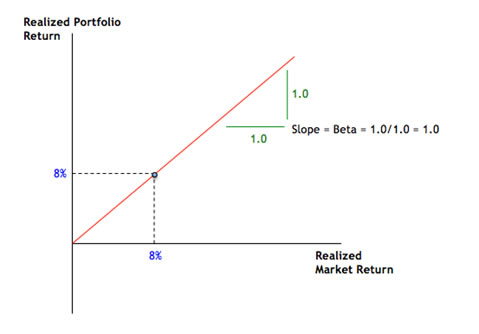
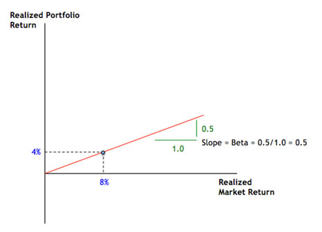
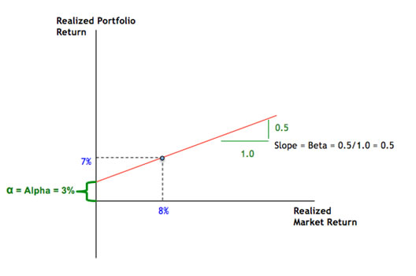

Performance Analytics: Relative Returns Analysis
Most individuals are aware of the fact that portfolio performance should be measured relative to an appropriate benchmark. Two valuable measures of how a portfolio/manager is performing relative to the benchmark are alpha and beta. Although somewhat esoteric in their derivations, these statistics are commonly included in marketing literature; therefore, it is imperative that advisors are able to communicate the value of these metrics.
Click on each of the links below to learn more about alpha and beta
Beta (β) is a measure of risk, quantifying a portfolio’s sensitivity to movements in a benchmark, such as the S&P 500. A beta greater than 1.0 means that the security or portfolio is more volatile than the benchmark, while a beta less than 1.0 means the asset or portfolio is less volatile than the benchmark. To understand more about how beta is utilized,, click the numbers for the beta coefficients in the graphic below..
Another way to present beta is with a graphic chart that shows market return on one axis and the portfolio return on the other. The slope of the line is the portfolio’s beta. For example, the following chart shows a portfolio with a beta of 1.0. Since there is a one-to-one ratio of performance in the market to performance in the portfolio, then slope perfectly bisects the quadrant at a 45-degree angle. Thus, a return of 8% in the market will be mirrored by an equal portfolio return of 8%:

If, however, the beta of the stock or portfolio veers from 1.0, then the slope of the line in the graph will change accordingly. For example, if the stock or portfolio has a beta of 0.5, then there is a 1-to-2 ratio of performance (see ratio of the green lines, showing the degree of the slope), and the slope of the line drops to half of what it was previously. Now, an 8% return in the market is reflected as a 4% return in the portfolio:

Alpha (a) identifies the difference in expected return of a portfolio, which was based on the beta of the portfolio, versus the actual returns that were achieved. The higher your alpha, the better your portfolio has done in achieving “excess returns.” It is generally considered to be a measure of the “value added” by the portfolio manager. The higher the alpha, the higher the “value added” by the portfolio manager, while a negative alpha indicates that the portfolio manager’s efforts were counterproductive, resulting in diminished returns.
For example, in the following chart we have again depicted our previous graph for a beta of 0.5. With a market return of 8%, we would have expected a return of 4%. But in this case, we got a return of 7% because our red line, which depicts the slope of beta, shifted up by 3%. This 3% is our alpha and is typically considered the excess return over the expected return that was provided by the portfolio manager.

Thus alpha depicts “excess returns.” Generally speaking, portfolio managers are constantly seeking to generate alpha.